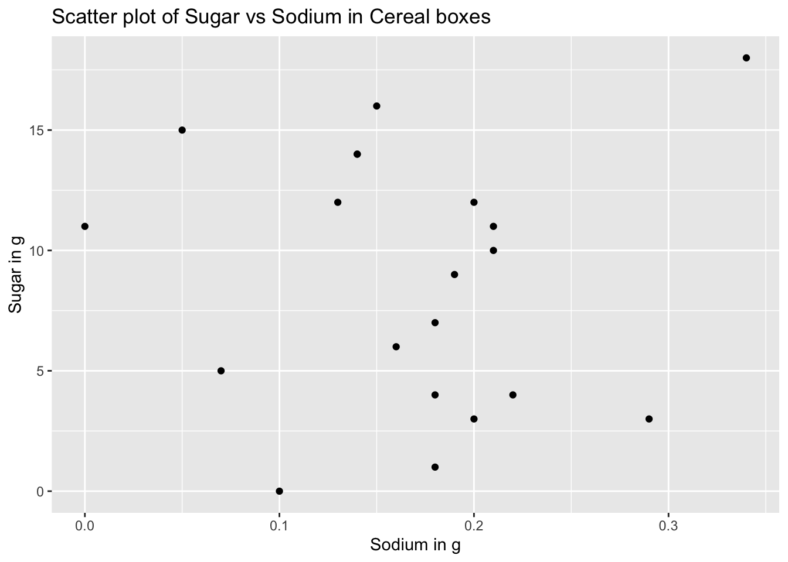

library(tidyverse)
library(readr)
library(ggplot2)
knitr::opts_chunk$set(echo = TRUE, warning=FALSE, message=FALSE)Challenge 5
challenge_5
cereal
Introduction to Visualization
Data Description
Reading the dataset
data <- read_csv("_data/cereal.csv", show_col_types = FALSE)
head(data)# A tibble: 6 × 4
Cereal Sodium Sugar Type
<chr> <dbl> <dbl> <chr>
1 Frosted Mini Wheats 0 11 A
2 Raisin Bran 340 18 A
3 All Bran 70 5 A
4 Apple Jacks 140 14 C
5 Captain Crunch 200 12 C
6 Cheerios 180 1 C Columns in the dataset:
colnames(data)[1] "Cereal" "Sodium" "Sugar" "Type" This dataset describes the amount of sodium and sugar present in different everyday cereals in the US. There is also another field called Type which indicates the type of cereal.
The dimensions of the dataset is as follows:
dim(data)[1] 20 4So it is a small dataset with only 20 different types of cereals.
Tidying the Data
The column Type is the only column with non-numeric values i.e. in the feature set so we can mutate it to numeric data for easy comparison. But first we’ll need to identify how many unique Types are present in the dataset that can be done as follows:
unique(data$Type)[1] "A" "C"So from the above cell we can see that there are only two types A and C. So we can assign A - 0 and C - 1 for easier analysis.
data <- data%>%
mutate(Type = case_when(
Type == "A" ~ 0,
Type == "C" ~ 1
)
)
head(data)# A tibble: 6 × 4
Cereal Sodium Sugar Type
<chr> <dbl> <dbl> <dbl>
1 Frosted Mini Wheats 0 11 0
2 Raisin Bran 340 18 0
3 All Bran 70 5 0
4 Apple Jacks 140 14 1
5 Captain Crunch 200 12 1
6 Cheerios 180 1 1We can analyze the sugar content and sodium content in each of the individual cereals and can also ponder on how it is distributed across various Cereals. The quantity of sodium is supposedly in milligrams and that of sugar is in grams so we can convert sodium from mg to g as follows:
data <- data%>%
mutate(Sodium = Sodium/1000)
head(data)# A tibble: 6 × 4
Cereal Sodium Sugar Type
<chr> <dbl> <dbl> <dbl>
1 Frosted Mini Wheats 0 11 0
2 Raisin Bran 0.34 18 0
3 All Bran 0.07 5 0
4 Apple Jacks 0.14 14 1
5 Captain Crunch 0.2 12 1
6 Cheerios 0.18 1 1Now all the quantities seem geniune and orgaized and now we can proceed with the visualizations.
Univariate Visualizations
Here we can visualize how the sugar and sodium content are distributed across various Cereal brands and what are the median, min and max amount of sugar or sodium present in the cereals overall. This can be obtained using a box plot of Sugars and Sodium in the dataset. The command to generate these visualizations is as follows:
ggplot(data)+
geom_boxplot(aes(x="Sodium", y=Sodium)) +
geom_boxplot(aes(x="Sugar", y=Sugar))+
labs(title = "Quantities of Sodium and Sugar in Ceral boxes", y="Quantity in g")Sodium seems un-readable in the above graph so we can observe it seperately using the following command:
ggplot(data)+
geom_boxplot(aes(x="Sodium", y=Sodium)) +
labs(title = "Quantities of Sodium in Ceral boxes", y="Quantity in g")From the above box plots we can observe the minimum, maximum, 25th percentile, 50th or the median and 75th percentile of sodium, sugar present in cereal boxes. The above boxplots provides a powerful insight to the consumers on what is the expected intake of sodium and sugar for each box of Cereal they purchase.
Now we can also analyse the sugar or sodium content in the cereals using a histogram which depicts the different amounts in which each of these occur in a typical cereal boxes. The histogram represent different ranges of quantities and the number of times they occur in different cereal boxes.
The histogram for sugar in different cereal boxes is as follows:
ggplot(data)+
geom_histogram(aes(x = Sugar), binwidth = 2)+
labs(title="Histogram for Sugar in Cereals", x="Sugar in g", y="Counts")The histogram indicates how often do cereal boxes contain a certain amount of sugar. This information is helpful in identifying the amount of sugar that is present in most of the cereal boxes. ## Bivariate Visualization(s) Now we want to find out how the quantity of sodium and sodium and how they are correlated to each other i.e. they want to find out how much sugar and sodium are present in each of the boxes and how they vary. This can be visualized by a scatter plot where in we can consider sugar to be on the X axis and sodium to be on the Y-axis and analyse how each of these occur.
The scatter plot can be obtained as follows:
ggplot(data)+
geom_point(aes(x = Sugar, y = Sodium))+
labs(title="Scatter plot of Sodium vs Sugar in Cereal boxes", x = "Sugar in g", y = "Sodium in g")From the above scatter plot we can observe increase initially and then a decrease in the quantity of sodium with the increase in the amount of sugar. We can also analyse the data by flipping the axes and the plot for s
The flipped scatter plot is as follows:
ggplot(data)+
geom_point(aes(x = Sodium, y = Sugar))+
labs(title="Scatter plot of Sugar vs Sodium in Cereal boxes", x = "Sodium in g", y = "Sugar in g")